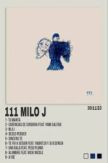
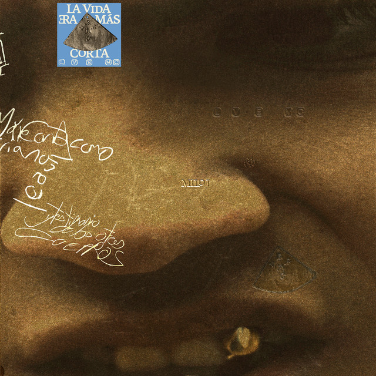

Introducción
Esta es una página web tipo rockola que se hizo para ver las 10 mejores canciones de Milo J. Aquí puedes ver sus canciones, imágenes, videos y solicitar tu canción favorita.
Imagenes
Aca vas a ver imagenes de algunas portadas de albumes de Milo j
album 1
Album 2

Album 3
Album 4

🎬 Rara vez
🎬 Milagrosa
🎬 Niño
🎬 Bajo de la piel
🎬 El bolero
| # | Canción | Artista | Álbum / EP | Año | Popularidad (Streams) | Precio (COP) |
|---|---|---|---|---|---|---|
| 001 | Rara Vez | Milo J | Single / Spotify Top | 2023 | ~867M | $500 |
| 002 | M.A.I | Milo J | 111 (Álbum) | 2023 | ~385M | $500 |
| 003 | Milagrosa | Milo J | Single | 2022 | ~218M | $500 |
| 004 | El Bolero | Milo J | Spotify Top | 2025 | ~207M | $500 |
| 005 | Bajo De La Piel | Milo J | La Vida Era Más Corta | 2025 | Álbum track | $500 |
| Total canciones listadas: 5 | ||||||
| Género | 2020s |
|---|---|
| Trap / Urbano | ⭐⭐⭐ |
| Rap | ⭐⭐⭐ |
| Pop | ⭐⭐⭐ |
| Folclore / Fusión | ⭐⭐ |